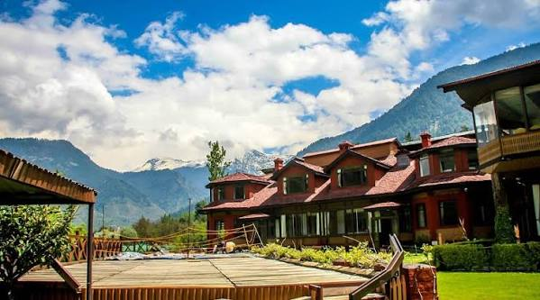

Pahalgam

Description
Pahalgam is a riverside town with pine forests and gentle trails. It is a restful base for walks and for visiting nearby valleys.
History
Historically a pastoral and pilgrimage area, Pahalgam has long been appreciated for its natural calm and as a gateway to mountain routes.